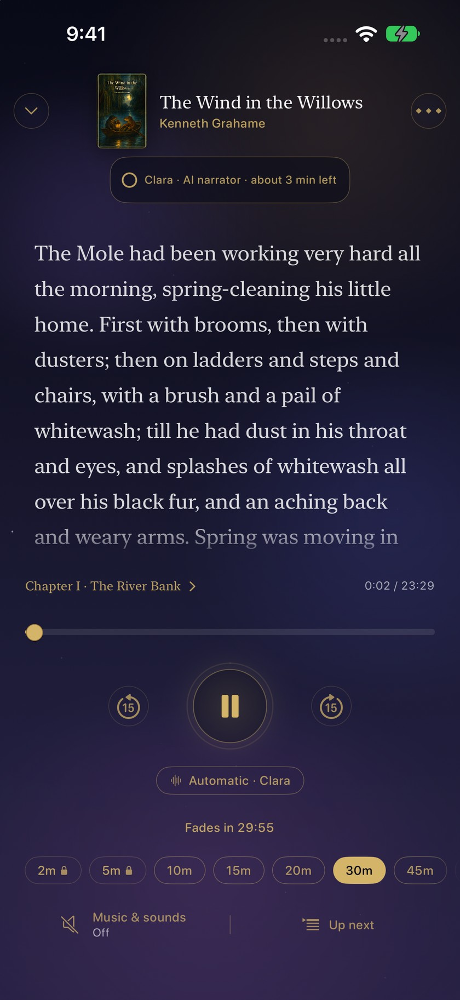
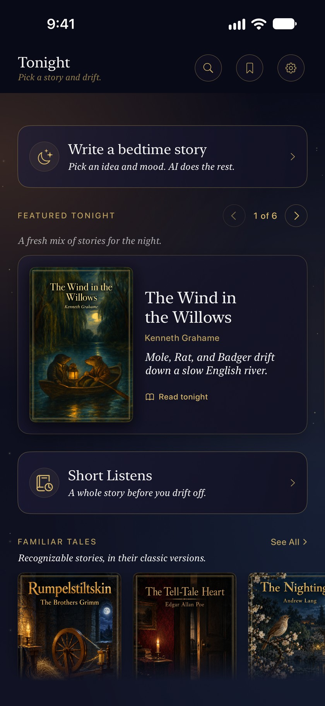

Find your story
Return to a familiar world, or follow your curiosity somewhere new.
A quieter kind of evening
Leave the day on the last page. Settle into a timeless book, a gentle voice, and the sound of rain outside.
Start with the free shelf. Made for iPhone.
App previews show free and Pro features.


An old friend, or a new favorite
Austen and adventure. Fairy tales and philosophy. Find a story for the kind of night you’re having, then pick up exactly where you left off.
Browse classic books, familiar tales, and short listens.
Save a book to your shelf. Your reading place will be waiting when you return.
Read along or close your eyes. The on-device voice works offline; Pro adds AI narration.
Made for the last minutes of the day
Choose a story. Make the room your own.
Let Nightshelf take it from there.
Inside Nightshelf · Real screens from Nightshelf.
Keep favorites close and find something for tonight.
Austen and adventure, fairy tales and philosophy, shelf by shelf.
History and Biography shows how many titles a collection holds.
Explore the cover, read the synopsis, and save it for another night.
Read along, listen, and let the sleep timer fade out. Shown with Clara’s free welcome narration.
Queue a few stories. Your place and timer carry over.
Fell asleep? Count back a few minutes and go to the passage.
Ten narrators, with a range of accents. Preview any of them free; choosing one is part of Pro.
Rain, leaves, music, and more, beneath the story.
Choose an idea and mood. Pro writes a new story with AI.
Screens from Nightshelf 1.9.22, showing free and Pro features. Tap a screen to explore. Availability follows your installed version.
The voices and sounds of Nightshelf
Try a narrator. Choose a background sound. Hear them together, just as you can in the app.
Find the voice for your evening.
AI narrators
Meet Mira and Rowan: two of Nightshelf’s ten English AI narrators, voiced by ElevenLabs. These are the current voices, at the app’s default bedtime pace. Preview them here, then choose your favorite with Nightshelf Pro.
On-device voices
Nightshelf also reads with voices installed on your iPhone, for free and offline.
Every sound plays offline in the app.
Sound off
Short previews of all fourteen choices. In the app, a sound can play beneath your story or continue after it ends.
Your evening, unhurried
Return to a familiar world, or follow your curiosity somewhere new.
Choose a voice, add a soundscape, and set a sleep timer.
Let the narration fade. Your place stays, even when you drift.
A little more room to wander
Keep it simple, or open up more
with Nightshelf Pro.
Included, from the first night
Start with free classic books and selected tales.
Nightshelf Pro
Explore more of the library and make the evening a little more your own.
Plans and current prices are shown in the app.
No. There's nothing to sign up for and no password to remember. Your reading progress, saved shelf and supported reading settings can sync through your own private iCloud. Ambient sound choices and their volume stay on this device. Nightshelf keeps no server copy of your synced progress.
The free shelf includes classic books and selected tales. The app labels which choices are free and which are included with Pro. You get the on-device voice, every sound and piece of sleep music, the sleep timer, and screen dimming, with no time limit and no ads. Nightshelf Pro opens more of the library, the AI narrators available in your version, 90- and 120-minute sleep timers, and Tonight's Story. Prices are shown in the app, and the annual plan includes a 7-day free trial if your Apple Account is eligible.
Books in the bundled library are installed with the app. An installed matching iPhone voice can read them with the network off, with ambient sound and the sleep timer. Cloud narrators and Tonight's Story need a connection. Complete translations already saved on your iPhone can also be read offline with an installed voice.
The library includes novels, collections, retellings and selected tales. Editions can omit illustrations, notes or other supporting material. In the player, open More options → About this book for a title’s format, source and credits.
Your own words go nowhere unless you say so. Reading, listening in your iPhone's voice, ambient sound, and the timer all happen on your phone. Tonight's Story, and an AI narrator reading a story you made, ask your permission before anything you chose or typed leaves; say no and they stay off while everything else keeps working. From Nightshelf 1.9.3, AI narrators can read the books that come with Nightshelf without asking, and they are on from the start. In current versions (1.9.17 and later), ElevenLabs Clara reads your first few minutes of English books once on each iPhone; with Nightshelf Pro, Automatic uses ElevenLabs Mira or you can choose another available English narrator. Earlier ElevenLabs releases used Mira for the welcome. Version 1.9.10 uses OpenAI Mira for the welcome and Automatic; earlier versions use OpenAI Nova. The paragraph being read and a small amount ahead go to Nightshelf's server, which sees your IP address as any website does and keeps a scrambled daily character count to limit use (with Pro, the request also carries the ID and receipt the privacy policy describes), and on to ElevenLabs from 1.9.11, or OpenAI in earlier versions. The selected provider gets that text, the voice choice, language and reading settings, with no Nightshelf device or subscription ID. ElevenLabs narration of stories you made requires separate permission on this iPhone; an earlier OpenAI permission does not authorize it. Settings → AI features → AI narrators for Nightshelf's books controls narration of the bundled books. Stories you made use separate permissions: review ElevenLabs narration under AI features, or turn off Tonight's Story & your stories there to withdraw permission for writing, covers and narration. Versions 1.9.2 and earlier ask before any cloud narration. Auditioning a narrator with ▶ doesn't ask first, because it sends a fixed sample sentence, never anything of yours. In versions with narrator discovery, opening the English voice picker checks Nightshelf’s server for available choices without sending story text, a device or subscription ID, or a receipt. The privacy policy names every stop your words make.
Current versions let you choose the original edition or a complete translation already saved on this iPhone. When saved editions are available, open More options → Reading language in the story. New translation preparation is no longer offered. Saved text is available offline; listening starts with a matching installed iPhone voice. With Pro, an available AI narrator can read an English translation after separate permission. The original edition and saved place stay available. Translations can contain mistakes. See translation help.
Now. Nightshelf is on the App Store for iPhones running iOS 17 or later. The whole app stays dark, because it's made for the last minutes of the day.
The day can end here
Your next favorite evening ritual is waiting.
Get Nightshelf for iPhone